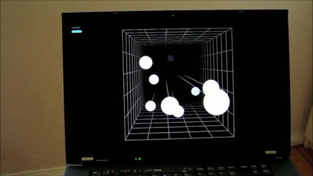
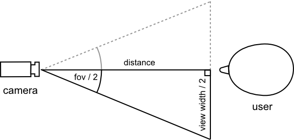
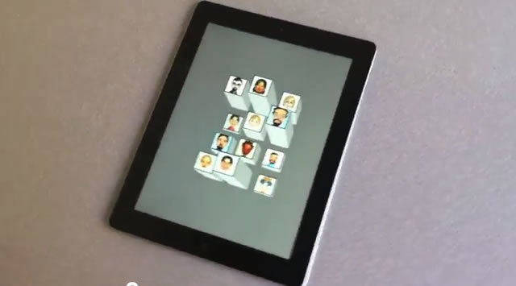

Head tracking with WebRTC
Introduction
The WebRTC standard allows supporting browsers to stream video and audio content directly from native devices such as a webcam. One rather exciting use case for WebRTC is head tracking — detecting the movement of your head (or other appendages) in relation to a webcam — which in turn allows us to create gesture-based controls. We created a demo employing head tracking to coincide with the Opera 12 release (this marked the first desktop browser to support camera access via the getUserMedia API) — FaceKat. Please try it out if you haven't done so already!

Figure 1: head tracking video demonstration (see the video).
The demo in the video above (Figure 1) can be found on the headtrackr Github repo, though note that this needs WebGL support as well. Headtrackr and FaceKat work best if your camera is mounted over your screen (like internal webcams on most laptops) and when your face is evenly lit. And of course you have to have a browser that supports getUserMedia and a computer with a webcam.
In this article I'll look at how the head tracking implementation works.
Head tracking — the basic ingredients
The JavaScript library I made to handle the face tracking in the above demos is available freely on Github — see headtrackr.js. My implementation of head tracking consists of four main parts (see Figure 2):
- a face detector
- a tracking mechanism
- a smoother
- the head position calculation

Figure 2: How the head tracking process works.
For the face detection, we use an existing JavaScript library called ccv. This library uses a Viola-Jones type algorithm (with some modifications) for detecting the face, which is a pretty fast and reasonably precise face detection algorithm. However, it's not fast enough to detect the face in realtime. Another problem is that it's also not able to detect the face in all positions, for instance if the head is tilted or turned slightly away from the camera.
We therefore also use a more lightweight object tracking algorithm called camshift, which we initialize with the position of the face we detected. The camshift algorithm tracks any object in an image (or video) based on its colour histogram and the colour histogram of the surrounding elements — see How OpenCV's Face Tracker Works for details. Our JavaScript implementation was ported from an ActionScript library called FaceIt, with some modifications. You can test the standalone camshift algorithm here.
Though the camshift algorithm is pretty fast, it’s also a bit imprecise and tends to jump around a bit, which can cause annoying jittering of the face tracking. Therefore, we wanted to find a way to smooth out the movements of the tracking. Typically, a Kalman filter would be used for this purpose, but any smoother will do; in our case we used double exponential smoothing since it's faster to calculate. This roughly calculates the current position by a weighted average of the previous positions. Since the position at any time is then based on previous positions and not the current one, the smoother will introduce some lag to the movements, but this will generally only be noticeable for very sudden movements.
At this point, we now know the approximate position and size of the face in the image. In order to calculate the position of the head, we need to know one more thing — the field of view of the camera. Webcams have widely differing angles of “field of view”, which will affect the size and position of the face in the video (see Figure 3 for an illustration). To get around this, we estimate the “field of view” of the current camera by assuming that the user is sitting around 60 cms away from the camera at first initialization (which is a comfortable distance from the screen, at least for laptop displays), and then seeing how big a proportion of the image the face fills. This estimated “field of view” is then used for the rest of the head tracking session.

Figure 3: An illustration of how different fields of view affect head position in face tracking (image courtesy of D Flam.)
Using this “field of view” estimate — and some assumptions about the average size of a person’s face — we can calculate the distance of the head from the camera by way of some trigonometry. The calculations are a bit convoluted, so I'll leave the details for the footnotes, but here's a figure to illustrate the gist of it.

Figure 4: A simple trigonometry illustration to show how we calculate the head-camera distance.
Calculating the x- and y-position relative to the camera is a similar exercise. At this point we have the position of the head in relation to the camera. In the FaceKat demo we just used these positions as the input to a mouseEvent-type controller (since that's what the original demo, FastKat, used), which again controlled the camera in our model:
// this event listener picks up head tracking events and sets some variables
document.addEventListener("headtrackingEvent", function(e) {
mouseX = e.x*20;
mouseY = -e.y*20;
}, false);
... snip ...
// these variables are then used in the rendering loop to control the camera
camera.position.x += ( (mouseX/windowHalfX)*700 - camera.position.x ) * .08;
camera.position.y += ( -(mouseY/windowHalfY)*600 - camera.position.y ) * .08;
... snip ...Going further to create head-coupled perspective
If we want to go further to create the head-coupled perspective seen in the Headtrackr example, we have to use the head positions to directly control the camera inside a 3D model. To get the completely correct perspective we also have to use an off-axis view (aka asymmetric frustum). This is because we want to counteract the distortion that arises when the user is looking at the screen from an angle, perhaps best explained by Figure 5.

Figure 5: The concept of off-axis view.
For our 3D-model, we used the excellent JavaScript library three.js, which allows us to set up a 3D model in the browser pretty fast without handling the low-level WebGL stuff. The library also includes the interface camera.setViewOffset for setting up displays spanning several monitors. What this actually does is serve up an off-axis view for each of the monitors separately, which means we can abuse this interface for our purposes. I'm sure there's cleaner ways to do this, but I didn't want to dig too deep into the internal workings of three.js. For the implementation details, take a look at controller.js in the github repo. For some more info on three.js, check out some of the excellent online tutorials, such as Getting Started with three.js.
Overall, the finished result works decently — at least if you have a good camera and even lighting. Note that the effect looks much more convincing on video, as in that case we have no visual cue as to the depth of the other objects in the scene; in real life our eyes are not so easily fooled.
Webcam quality
One of the problems I stumbled upon while working on this demo was that the quality of webcams varies widely. Regular webcams often have a lot of chromatic aberration on the edges of the field of view due to cheap lenses, which dramatically affects the tracking effectiveness outside the immediate centre of the video. In my experience the built-in cameras on Apple MacBooks had very little such distortion.
Most webcams also adjust brightness and white balance automatically, which in our case is not very helpful as it messes up the camshift tracking. Often the first thing that happens when video starts streaming is the camera starts to adjust white balance, which means that we have to check that the colours are stable before doing any sort of face detection. If the camera adjusts the brightness a lot after we’ve started tracking the face, there’s not much we can do except reinitialize the face detection.
Summary
Although head-coupled perspective might not be ready for any type of generic interaction via the webcam yet, it works fine with simple games like FaceKat. I’m sure there are many improvements that can make it more precise and fail-proof: the library and demos were patched together pretty fast, and there are several improvements that I didn’t get time to test out, such as:
- Tweaking the settings of the camshift algorithm
- Using other tracking algorithms, such as bayesian mean shift, which also uses information about the background immediately surrounding the face
- Using edge detection to further demarcate the edges of the face (though this might be a bit heavy on processing)
- Using
requestAnimationFrameinstead ofsetIntervals - Using HSV components for the camshift algorithm (which the original camshift paper suggests) instead of RGB
If you feel like implementing any of these, feel free to grab a fork! Meanwhile, I’m pretty sure we’ll see many more exciting things turn up once WebRTC becomes supported across more browsers, check out Eye Track Three Dee for instance…
To give credit where credit is due, the inspiration for this demo was Head Tracking for Desktop VR Displays using the WiiRemote. In this video, Johnny Chung Lee hacks a Wii remote to capture the motions of the user. Later on, some French researchers decided to try out the same thing without the Wii remote: see 3D displays on mobile devices: HCP. Instead of motion sensors they used the front-facing camera of the iPad to detect and track the rough position of the head, with pretty convincing results. The result is available as an iPad app — i3D — and can be seen in Figure 6:

Figure 6: i3D is an iPad app that uses head tracking to pan around a 3D environment (watch the video).
Footnotes
[1]
The width of the field the camera captures is relative to how far away any object is, more precisely:

which gives us:
So what's the view width at the point where the face is? We know that the proportion of the screen the face will fill is given by:
However, this is the same for pixels, so:

And this gives us:
Inserting this, we get:
In our case viewwidthpx is the width of the canvas, facewidthpx is the width of the face on the canvas, and we assume facewidthcm is around 17 cm.
This article is licensed under a Creative Commons Attribution 3.0 Unported license.
Comments
-

Exciting technique and great demo-videos.
-

^^ :faint: You saw the post date of that post - April 1, 2009 (= April Fools Day = Face gestures was a joke). That's got to be the best April Fool joke by a browser vendor in a decade. Hats off to the employee who thought of it.
-

I rather liked our face gestures feature ;-)
-

It's Opera 12.00 - Windows 7 x86 - Intel GMA 3150.
-

Great demo, worked flawlessly.
-

@JanGen - thanks! I have fixed the link typo too - cheers for pointing that out.
-

I've try the démo on my PC on Linux, I've got some problem as the webcam is not active by default i've got to go to the config page to enable it
-

I've tried it on Android phone/tablet, but i can't select the web cam to use, How can i configure this, or should opera detect the two webcams and ask me to select wich one to use
-
http://blog.chromium.org/2013/02/hello-firefox-this-is-chrome-calling.html
No new comments accepted.JanGen
Wednesday, July 18, 2012
What about this? ;)
http://dev.opera.com/articles/view/labs-introducing-opera-face-gestures/
I especially like the add Bookmark gesture:
Swapnil Rustagi
Wednesday, July 18, 2012
I cannot use anything WebGL - enabling WebGL ONLY increases the score at html5test.com - on the rest of the web - Opera does not render anything. Anyways, that's for the HWA and WebGL team at Opera.
Chris Mills
Wednesday, July 18, 2012
@Swapnil - it's a shame you are having trouble using WebGL. What build and OS are you using?
Swapnil Rustagi
Thursday, July 19, 2012
And it's OpenGL 1.4 + extensions capable, on DirectX it's DirectX 9 (Shader Model 3.0) capable.
And yes, Google Chrome (version 10 or 11 was the last time I tried it) rendered WebGL content; albeit slowly (but something is better than nothing).
JanGen
Sunday, July 22, 2012
(BTW a typo in the link beneath first video, headtrackr Github repo, http worked but not https)
WebGL is running stable here on Linux 64
Chris Mills
Monday, July 23, 2012
Charles de MAGNEVAL
Thursday, October 18, 2012
Charles de MAGNEVAL
Thursday, October 18, 2012
KerenSkyy
Thursday, February 14, 2013